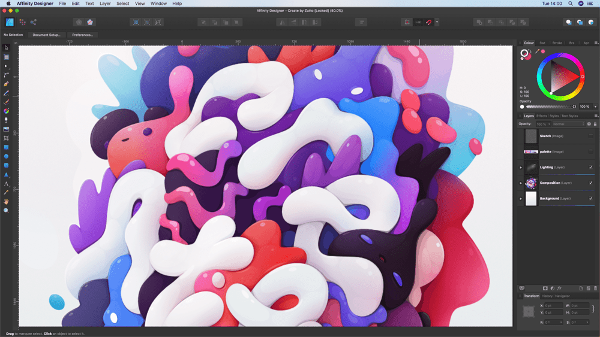
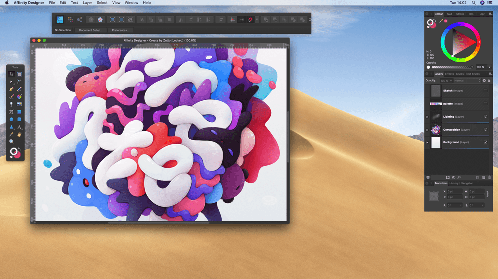

Not everyone works in the same way. Affinity Designer accommodates this by having two different modes that you can choose from: Normal and Separated mode. Each mode's workspace layout can be customized to suit your design needs. This is especially useful as different Personas use different panels.
Affinity Designer offers both Windowed and Maximized modes.
When Affinity Designer first opens, it will run in Normal (single window) mode. This means that all panels and view will be neatly docked together so that all controls are at your finger tips and easy to find.

Separated mode has no containing frame. The panels (or panel groups) and toolbars are floating, and each open document has its own view (although you can still create groups). This can be especially useful if you have more than one screen as it allows the biggest possible work area. This means that you can be working on several documents at a time, each having their own full screen desktop!

Regardless of which layout mode you choose to work in, you also have the option of full screen view. In this view, Designer is effectively maximized to its own desktop, giving you every available pixel to work with.
When Affinity Designer first opens, it will display in a window which fills approximately three-quarters of the screen. You can change the size of this window at any time.
When maximized, Affinity Designer will fill the entire available screen space, excluding the area occupied by the taskbar at the bottom.
Do one of the following:
Do one of the following:
When switching back to Windowed mode, the window will return to the size it was at before entering Maximized mode.